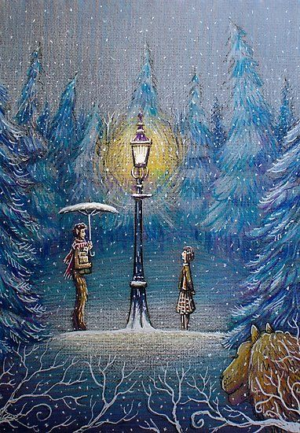

Hola, espero estes bien, lamento lo aleatorio de este mensaje, lo inoportuno que puede llegar a ser las molestias que puede causar pero quieria hacer algo, aun que sea lo minimo, estos dias van a ser dificiles solo ancio verte, abrazarte y amarte, pero se que por custiones diversas no es la prioridad solo aveces siento el frio y no puedo dejar de pensar en ti, encuentro lecturas, poemas y escritos que parecen estar hechos para ti, no te quito mas tu tiempo debes estar ocupada, solo una ultima cosa Te amo, te extraño anhelo tus besos, lo dulce de tus abrazos y las pequeñas acciones, el rosar tu cabello con mi rosto, el como picas mis manos y cuerto, extraño poder ver tus ojos, sentir nervios cada vez que te voy a ver y sentir ese vacio rutinario con cada despedida, se que es poco tiempo se que son varios dias pero estos tambien son dias en los que solo quisiera poder pasar de una pantalla para abrazarte y poder estar contigo aun que sea 5 minutos, con esto conluyo mi mensaje uno no meditado, uno sin tanto pensamiento y que se siente extraño compartir pero nuevamente es lo minimo que puedo hacer en tu aparente ausencia Te amo con toda mi alma y vida, Te amo con todo mi corazon y sobre todo Te extraño.
